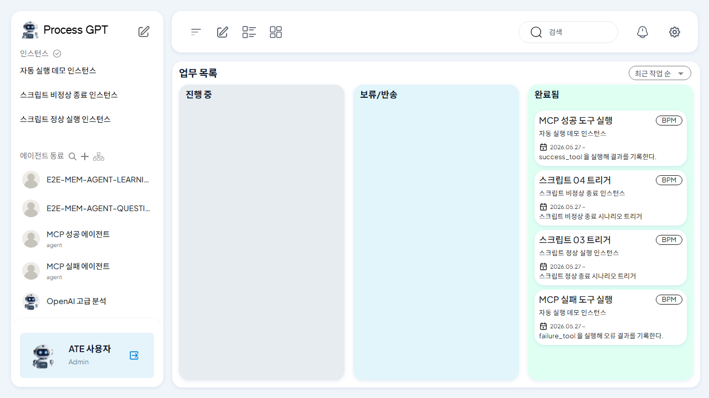
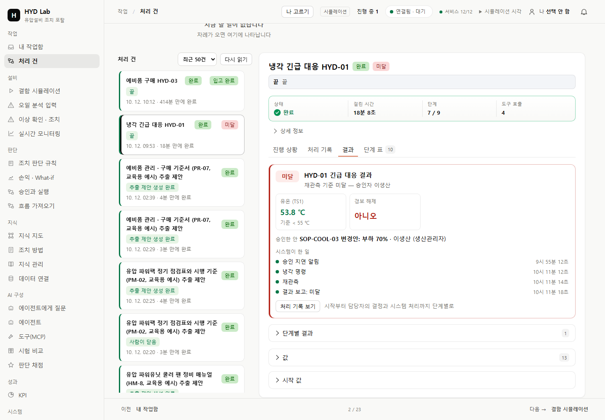
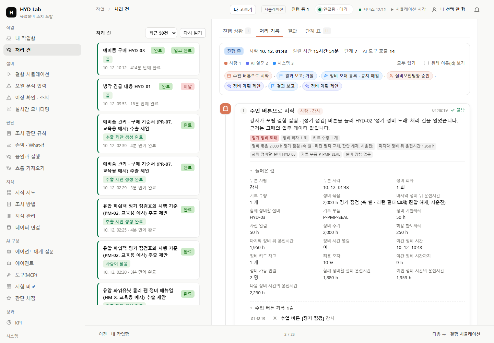
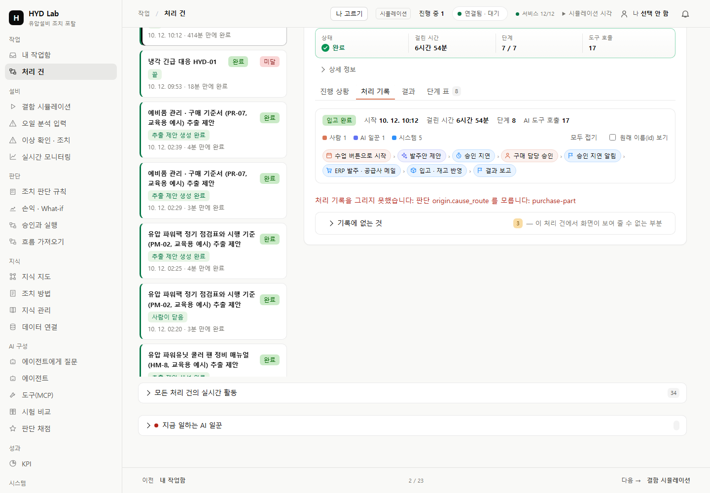
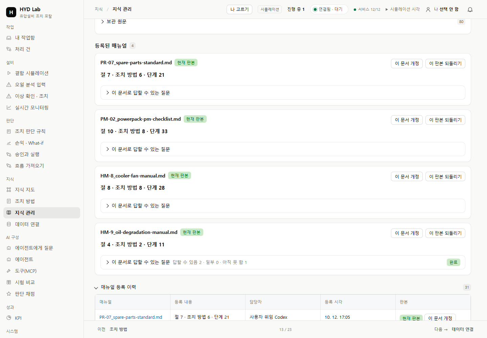
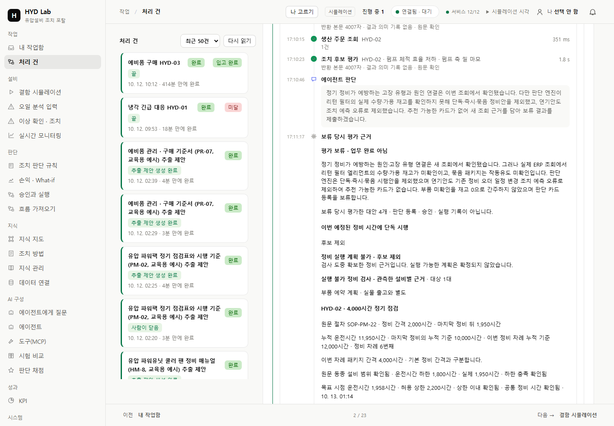

ProcessGPT 참고 원본
보존 모노레포의 실제 E2E 업무 목록 PNG · 현재 최신 앱의 실행 캡처는 아님 · 파일명이 card-detail이지만 원본은 목록 화면

원본 SHA-256 b77302d40f033a548428a000cfb4f817c72a75ae0c0b81c38d8cabacd3e72200
실제 GET 캡처 검사 통과
참고 PNG는 보존한 원본입니다. 오른쪽은 같은 실제 처리 건을 GET으로 읽은 화면입니다. A는 phase1 보존 화면, B/C/지식은 최종 phase2 화면입니다. A 미달과 B 보류를 성공으로 바꾸지 않으며 C의 실제 상태를 그대로 보존합니다. source preview는 원래 추출 제안이며 저장된 검토 연결을 재현한 화면으로 주장하지 않습니다. 제품 CSS · 색상은 변경하지 않았습니다.
아래는 검토 원장·실제 등록 영수증·현재 카탈로그를 읽어 대조한 값입니다. 원래 추출 제안 화면에 현재 연결을 주입하지 않았습니다.
| 원문 / 번호 | 기존 대상 번호 | 검토 판본 | 등록 판본 | 현재 판본 |
|---|---|---|---|---|
| HM-8 / SOP-FAN-11 | SOP-FAN-11 | 4749324e984b9053af8378b1de33c5714eccbb00c75bf94d2d9fe3aac0508c87 | 4749324e984b9053af8378b1de33c5714eccbb00c75bf94d2d9fe3aac0508c87 | 4749324e984b9053af8378b1de33c5714eccbb00c75bf94d2d9fe3aac0508c87 |
| HM-8 / SOP-FAN-12 | SOP-FAN-12 | 92e6f7cc37935d53cdf252477ed69e4c161f52c8ae2f27d89cffb68576ad29f6 | 92e6f7cc37935d53cdf252477ed69e4c161f52c8ae2f27d89cffb68576ad29f6 | 92e6f7cc37935d53cdf252477ed69e4c161f52c8ae2f27d89cffb68576ad29f6 |
[
{
"document": "HM-8",
"source_sop": "SOP-FAN-11",
"target": "skill:sop-fan-11",
"reviewed_pin": "4749324e984b9053af8378b1de33c5714eccbb00c75bf94d2d9fe3aac0508c87",
"actual_receipt": {
"contract_sha256": "4749324e984b9053af8378b1de33c5714eccbb00c75bf94d2d9fe3aac0508c87",
"owner": null,
"skill": "skill:sop-fan-11",
"sopId": "SOP-FAN-11",
"source_steps_sha256": "d7dbbde85039456de595400dc3a38cd83fb36ce876b22db9bd696eeca183bdd6"
},
"current_contract": {
"id": "skill:sop-fan-11",
"sopId": "SOP-FAN-11",
"owner": null,
"contract_sha256": "4749324e984b9053af8378b1de33c5714eccbb00c75bf94d2d9fe3aac0508c87",
"steps": [
{
"order": 1,
"text": "설비를 정지하고 현장 패널에서 LOCAL로 전환한다."
},
{
"order": 2,
"text": "벨트 처짐을 측정한다 (기준 10~15 mm)."
},
{
"order": 3,
"text": "베어링 소음과 표면 온도를 확인한다 (60 ℃ 이하)."
},
{
"order": 4,
"text": "재가동 후 VS1이 0.9 mm/s 아래로 내려왔는지 확인한다."
}
],
"sections": [
{
"id": "HM-8.1",
"ref": "HM-8.1",
"title": "팬 진동 점검",
"excerpt": "VS1 1.2 mm/s 초과 시 팬 속도를 낮추고 베어링 소음 · 온도를 확인한다."
}
]
}
},
{
"document": "HM-8",
"source_sop": "SOP-FAN-12",
"target": "skill:sop-fan-12",
"reviewed_pin": "92e6f7cc37935d53cdf252477ed69e4c161f52c8ae2f27d89cffb68576ad29f6",
"actual_receipt": {
"contract_sha256": "92e6f7cc37935d53cdf252477ed69e4c161f52c8ae2f27d89cffb68576ad29f6",
"owner": null,
"skill": "skill:sop-fan-12",
"sopId": "SOP-FAN-12",
"source_steps_sha256": "a7581ec724746dbd258a2281a727db77c7fc576931b1cdf58a67b1976de7f742"
},
"current_contract": {
"id": "skill:sop-fan-12",
"sopId": "SOP-FAN-12",
"owner": null,
"contract_sha256": "92e6f7cc37935d53cdf252477ed69e4c161f52c8ae2f27d89cffb68576ad29f6",
"steps": [
{
"order": 1,
"text": "LOCAL 전환과 잠금(LOTO)을 확인한다."
},
{
"order": 2,
"text": "구 벨트를 분리하고 풀리 정렬을 점검한다."
},
{
"order": 3,
"text": "새 벨트를 걸고 처짐을 12 mm로 맞춘다."
},
{
"order": 4,
"text": "30분 시운전 뒤 냉각 효율 CE가 80 % 이상인지 확인한다."
}
],
"sections": [
{
"id": "HM-8.2",
"ref": "HM-8.2",
"title": "쿨러 팬 벨트 교체",
"excerpt": "벨트 처짐이 기준을 벗어나거나 균열이 보이면 교체한다."
}
]
}
}
]개별 정비 설비 · 필요 부품 · 발주 · 입고 · 원문 판본 대조는 캡처 검사 기록과 같은 폴더의 스크롤 위치별 PNG에서 확인합니다.
보존 모노레포의 실제 E2E 업무 목록 PNG · 현재 최신 앱의 실행 캡처는 아님 · 파일명이 card-detail이지만 원본은 목록 화면

원본 SHA-256 b77302d40f033a548428a000cfb4f817c72a75ae0c0b81c38d8cabacd3e72200
A는 앞선 phase1의 유효한 미달 종결 화면입니다. 동일 화면을 다시 검사하지 않았습니다.

보존 모노레포의 실제 E2E 업무 목록 PNG · 현재 최신 앱의 실행 캡처는 아님 · 파일명이 card-detail이지만 원본은 목록 화면
원본 SHA-256 b77302d40f033a548428a000cfb4f817c72a75ae0c0b81c38d8cabacd3e72200

기존 보존 공식 문서 실행 기록 PNG

원본 SHA-256 5f63595d05b6d6031f79e46e13d6433ec3cc0fd043a2706b9ce0a9c22887fcdd

보존 모노레포의 실제 E2E 업무 목록 PNG · 현재 최신 앱의 실행 캡처는 아님 · 파일명이 card-detail이지만 원본은 목록 화면
원본 SHA-256 b77302d40f033a548428a000cfb4f817c72a75ae0c0b81c38d8cabacd3e72200

왼쪽은 원본 컴포넌트의 독립 compile 화면이며 전체 앱 실행 화면은 아닙니다. 최신 원격 소스 확인: 모노레포6084127, Vue265580f, ontology-studio20afcde. 보존 Vue867e8cf 이후 관련 두 파일 변경은 오류 이벤트 goal 설명 연결과 CLI 마크다운 플러그인입니다. PgToolStep 컴포넌트는 동일합니다. 전체 픽셀 일치나 사용자 시각 인수를 대신하지 않습니다.

